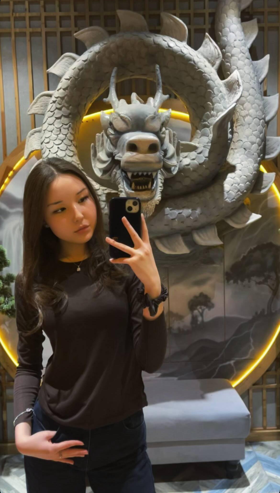
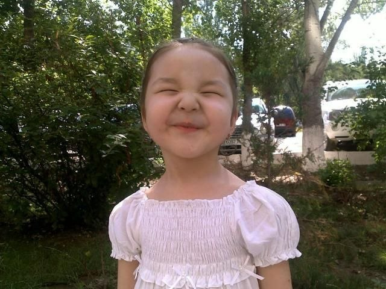
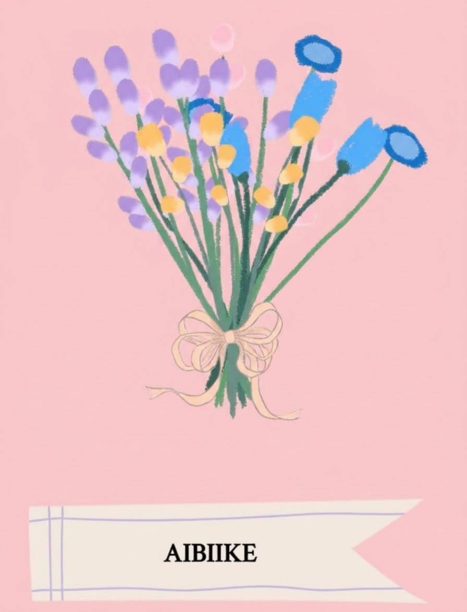

Самой красивой девочке
Слов не хватит, чтобы сказать, как много ты для меня значишь.
При каждой встрече с тобой даже самые обычные дни становятся ярче, а в любых местах уютно.
Сегодня день принцесс, а значит и твой день тоже.
у меня для тебя сюрприз
в честь дня принцесс
ты готова?
(нажми, чтобы открыть конверт)
Слов не хватит, чтобы сказать, как много ты для меня значишь.
При каждой встрече с тобой даже самые обычные дни становятся ярче, а в любых местах уютно.
Сегодня день принцесс, а значит и твой день тоже.



Надеюсь что у тя всё получится в твоем блоге.
ну и всего наилучшего по базе